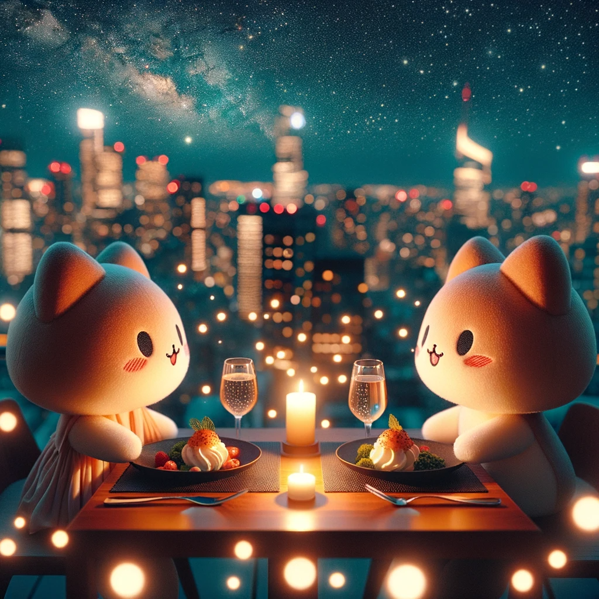
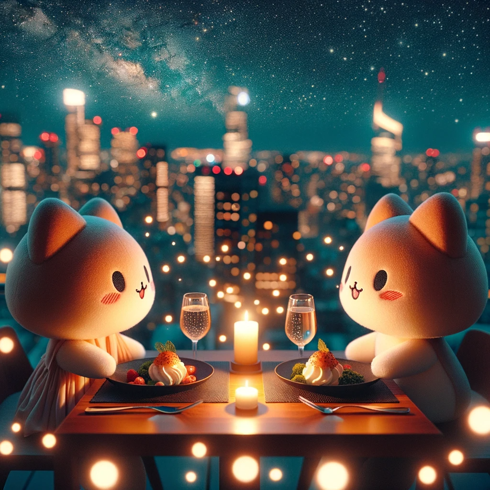

Feliz cumpleaños 22 Pochi 💖

Para él/la futura lectora de esta carta,
Esta es una carta por el cumpleaños 22 de mi princesa, la persona que amo más que a nada en este mundo y que me motiva a ser mejor cada día desde que entro a mi vida. Soy una persona que ama muy fuerte y que le da mucha importancia a las personas, así que creeme que mi princesa es incomparable e invaluable en mi mundo.
Ya pasó un año desde la primera vez que estoy en un cumpleaños a su lado, es muy curioso como mientras pasan días, semanas, meses, y más años lo mucho que una relación puede seguir evolucionando. La vida ha cambiado muchísimo en muy poco tiempo y es realmente increíble cómo se dan las cosas. De un mes a otro empezamos a llamarnos de una forma a otra, creamos nuevas palabras, nuevas manías que solo entendemos los dos, y tantos nuevos recuerdos. Es simplemente una locura!
Sabes, dicen que el amor siempre tiene algo de locura, por eso se que nos amamos muy profundamente, pues estando juntos podemos sacar nuestros niños interiores y realmente disfrutar muchísimo. Aunque hay otro lado de esto, y es que poco a poco nuestra mutua compañía nos ha hecho reconectar con algunas cosas que hemos empezado a sanar, cosas que quizás ambos nos habíamos olvidado, cosas que nos han hecho crecer mucho.
Eso es algo maravilloso de encontrar a la persona con la que quieres pasar el resto de tu vida, todo se convierte en una aventura donde creces de maneras inesperadas, pero aun asi muy bonitas. Aprendes que la vida es más que salir y quedarse siempre hasta tarde queriendo encajar con todos, y es más fácil encontrar la paz con uno mismo. Aprendes el valor real de la compañía correcta, porque a veces mejor en menor cantidad y mayor calidad. Aprendes también que un buenos días cada día es importante si viene de tu princesa y que un día sin ello es un día que no podrás dar ese 101%.
Quiero poder decir con mucha alegria a traves de esta carta que estoy extremadamente feliz de contar con mi princesa en mi vida y muy orgulloso de todos los logros que consiguió en este año por si sola, porque ella puede decir que tuvo ayuda de muchas personas en este camino, pero lo que realmente siempre fue el motor para que logre todo en tan poco tiempo es su propia visión del futuro que quieres para ti y tu familia. Es y siempre será increíble como ser humano.
Además de esto te queria mostrar como somos Pochis realmente, le pedí a una inteligencia artificial que nos creará siendo Pochis por completo en una cita y estos fueron algunos de los resultados que me dio:
 



Si, probablemente no entiendas qué son los Pochis, pero tienes que saber que si somos con mi princesa, y esto es un hito para mostrarle el amor que le tengo.
Te amo mi princesita hermosa, con todo mi corazón.
Con mucho amor,
Pochi ♥️